7 Week 7: Observing Environmental Change (I)
Today you will learn how to assess trends in ecosystem resilience from space. We will be using satellite data from the Moderate Resolution Imaging Spectroradiometer (MODIS) provided by NASA Earth Data. The specific MODIS product we are processing is the Vegetation Indices Monthly L3 Global 0.05 CMG (MOD13C2). I have processed the complete dataset for you at a reduced spatial resolution of 0.25 degrees (approximately 25 km at the equator) to save you time. The dataset spans nearly 25 years, from February 2000 to September 2024, and is available for download here. I have added the file to our shared_files folder.
Our analysis will focus on the Amazon Basin. Load the required libraries:
Open the file and plot annual mean values:
data <- terra::rast("/global/home/hpc5112/ENSC430/shared_files/MOD13C2061-EVI-0.25deg.nc")
# Let's subset Jan 2001 to Dec 2023
data <- terra::subset(data, 12:287)
# Let's focus on the Amazon basin
data <- crop(x=data, y = c(285, 315, -15, 5))
evi.mean <- mean(data, na.rm = TRUE)
plot(evi.mean, main = "Annual Mean Enhanced Vegetation Index (EVI) (-)")
map("world2", add = TRUE)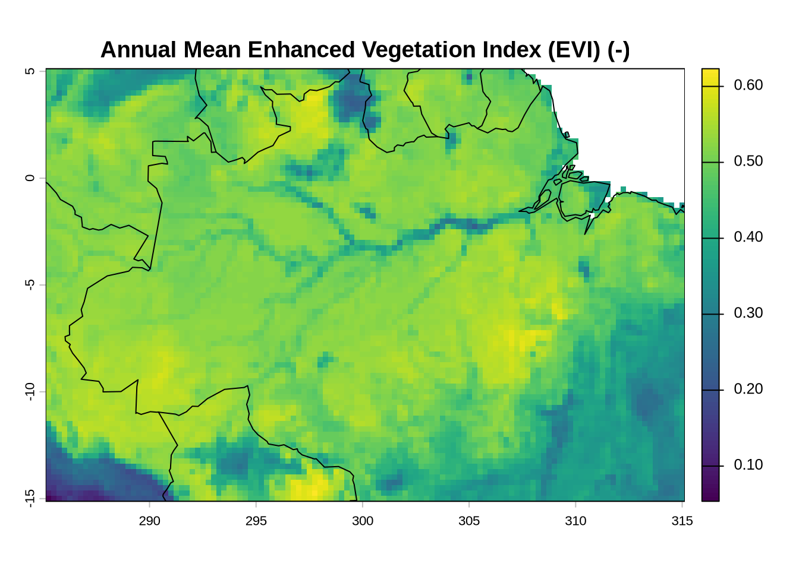
Next, we will need to convert the data to anomalies. You already know how to do this and we can use the code from the previous tutorial.
# Get the dates
dates <- terra::time(data)
dates <- format(dates, "%Y-%m-%d")
dates <- base::as.Date(dates)
# Create raster time series
data.ts <- rts(data, dates)
# Calculate 12-month climatological means
data.12 <- climetrics::apply.months(data.ts,'mean')
# Plot 12 months of data
plot(data.12)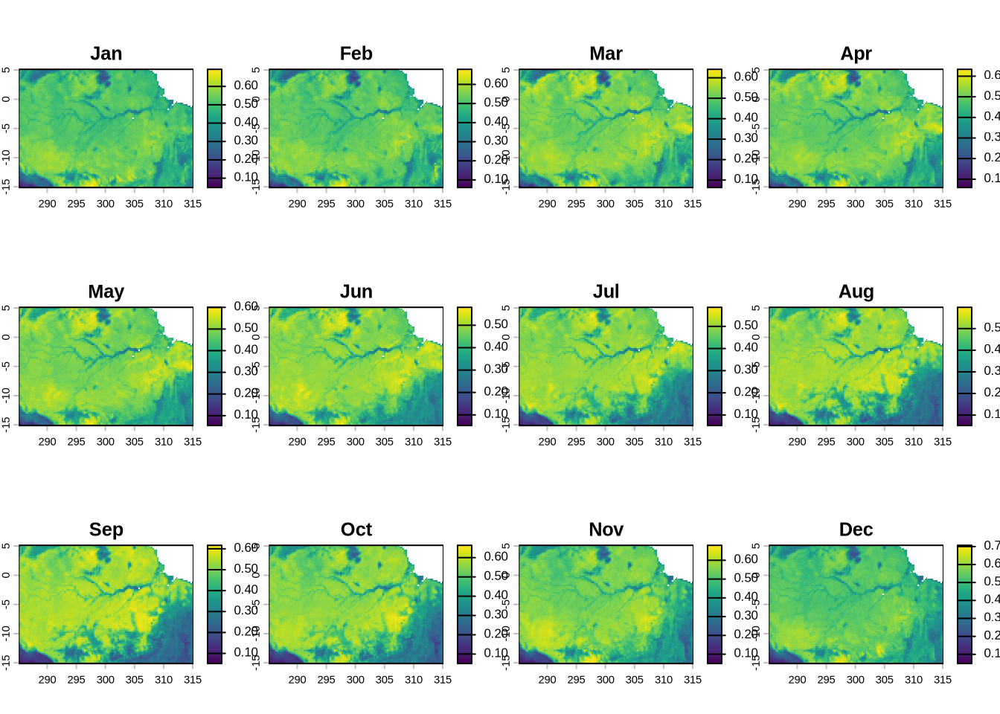
Calculate the anomalies by subtracting the 12-month climatologies from the monthly data. You already know how to do this from the previous tutorial.
# Get the number of years
n <- length(dates)/12
# Create a time series where the 12-month climatological mean repeats for all years
data.clim <- rep(data.12, n)
# Calculate anomalies
data.anom <- data - data.clim
# Have a look at the data
plot(terra::subset(data.anom, 1:1))
map("world2", add = TRUE)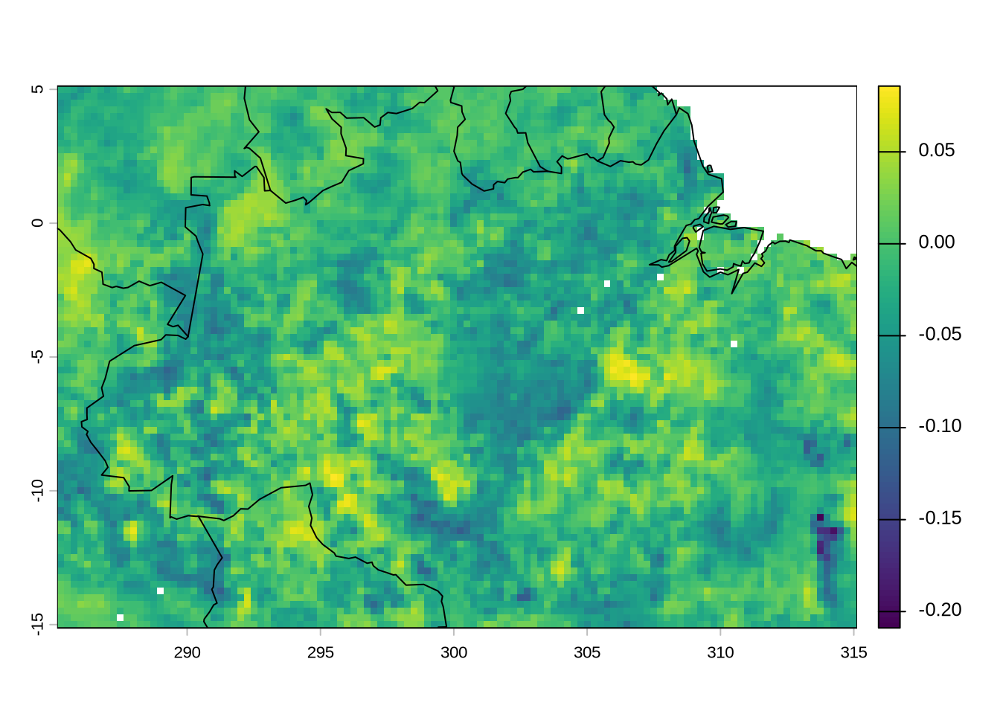
Let us find out if there is a trend in the EVI anomalies.
# Define a function that calculates a linear trend
trend.fun <- function(x) {
# If a grid cell contains NA, then set the result to NA
if (is.na(mean(x))) {
return(NA)
} else {
time <- 1:length(x)
linear.model <- lm(x ~ time)
trend <- coef(linear.model)["time"]
return(trend)
}
}
# Apply function to each gridcell
trend <- app(data.anom, fun = trend.fun)Plot the trend:
# Set the desired range for the palette
min_val <- -0.0003
max_val <- 0.0003
# Define breaks to control the min and max of the palette
breaks <- seq(min_val, max_val, 0.0001)
my.col <- rev(map.pal("differences", n = length(breaks) - 1))
plot(trend, col = my.col,
type = "continuous",
breaks = breaks,
main = "Trend in EVI (2001-2023)")
map("world2", add = TRUE)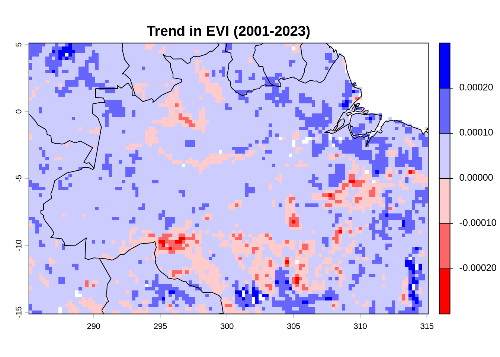
- Have a look at the region in Southern Brasil, along the northeastern border of Bolivia. What do you think is happening here? Compare the region with images from Google Maps.
The next step is to detrend our time series. You already know how to do this and we can borrow code from the previous tutorial.
# Define a function that removes a linear trend
detrend.fun <- function(x) {
time <- 1:length(x)
# If a grid cell contains NA, then set the result to NA
if (is.na(mean(x))) {
return(rep(NA, length(time)))
} else {
time <- 1:length(x)
linear.model <- lm(x ~ time)
detrended.series <- stats::residuals(linear.model)
return(detrended.series)
}
}
data.anom.detrend <- app(x = data.anom, fun = detrend.fun)
plot(terra::subset(data.anom.detrend, 1:1))
map("world2", add = TRUE)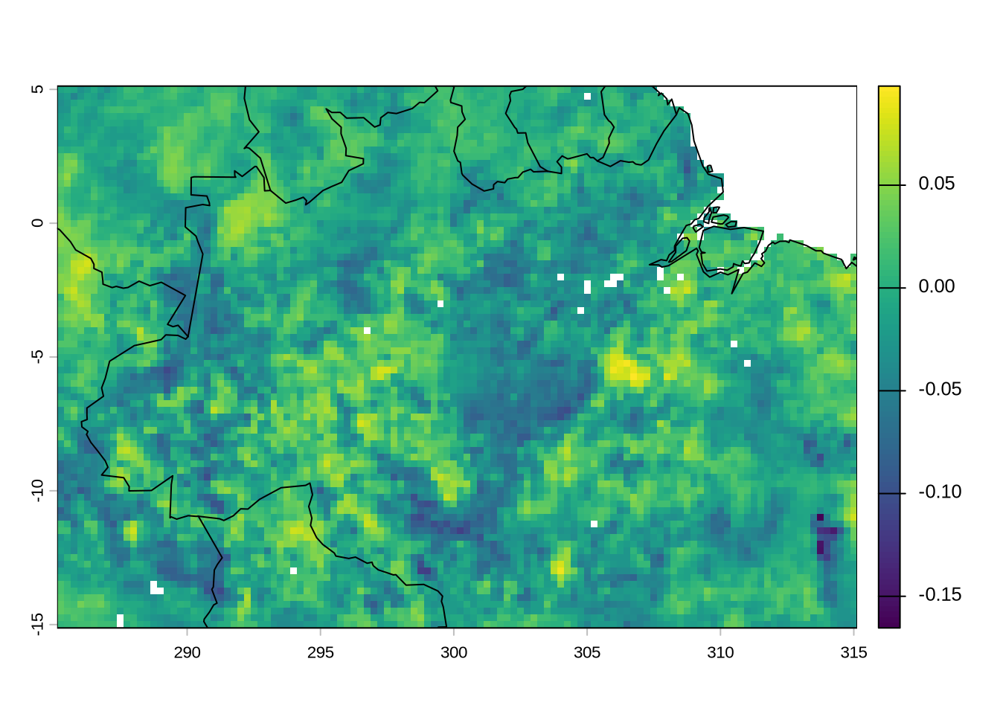
As you may have figured out by now, there is a lot of land use change happening in the Amazon basin. For our analysis we need to exclude grid cells affected by land use change. You can do this by obtaining a map of land cover and masking all regions that don’t classify as forests. Alternatively, you can filter out all grid cells with low EVI values. Let’s create a mask that only shows grid cells with EVI values > 0.4.
data <- terra::rast("/global/home/hpc5112/ENSC430/shared_files/MOD13C2061-EVI-0.25deg.nc")
# Let's focus on the Amazon basin
data <- crop(x=data, y = c(285, 315, -15, 5))
mask <- min(data, na.rm = FALSE)
mask[mask<0.4] <- NA
mask <- mask - mask + 1
plot(mask, main = "Mask where min EVI > 0.4 (-)")
map("world2", add = TRUE)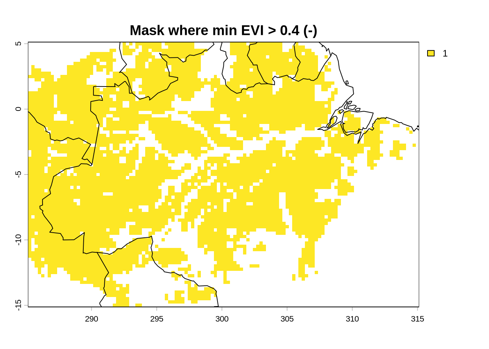
Let’s apply the mask to our time series.
data.anom.detrend <- data.anom.detrend * mask
plot(terra::subset(data.anom.detrend, 1), main = "Detrended EVI Anomalies (-)")
map("world2", add = TRUE)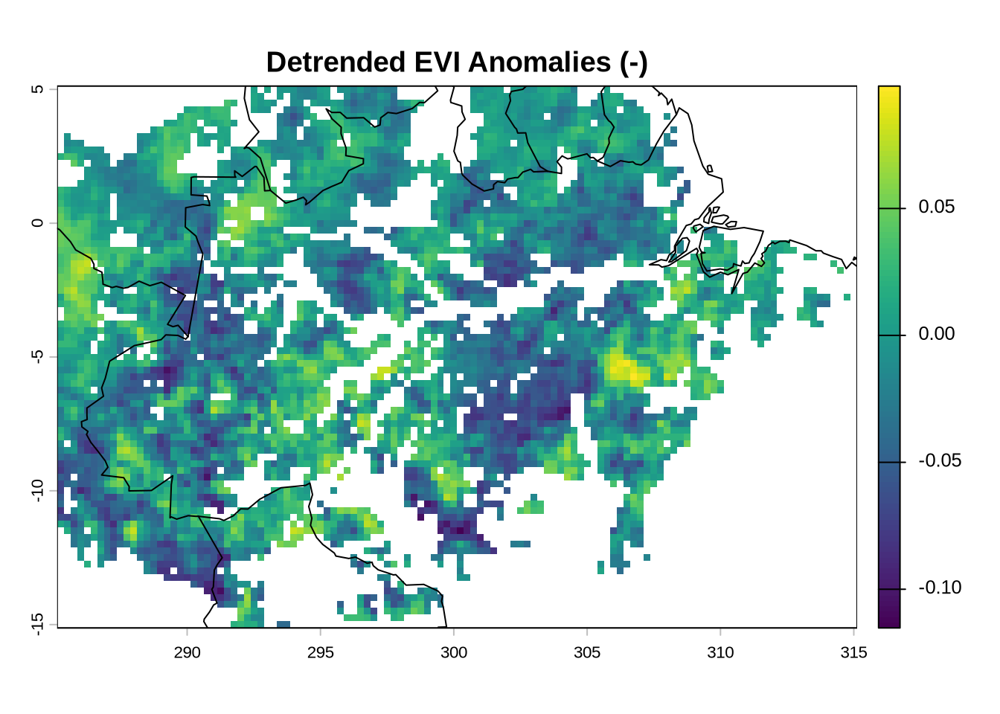
We are now ready to apply the early warning indicators for ecosystem resilience from the previous tutorial. These indicators will be applied to each grid cell. However, the analysis is computationally expensive. To make it feasible, we first need to reduce the grid’s spatial resolution using the aggregate function.
data.anom.detrend.coarse <- aggregate(x = data.anom.detrend, fact=2, fun="mean")
plot(terra::subset(data.anom.detrend.coarse, 1), main = "Detrended EVI Anomalies (-)")
map("world2", add = TRUE)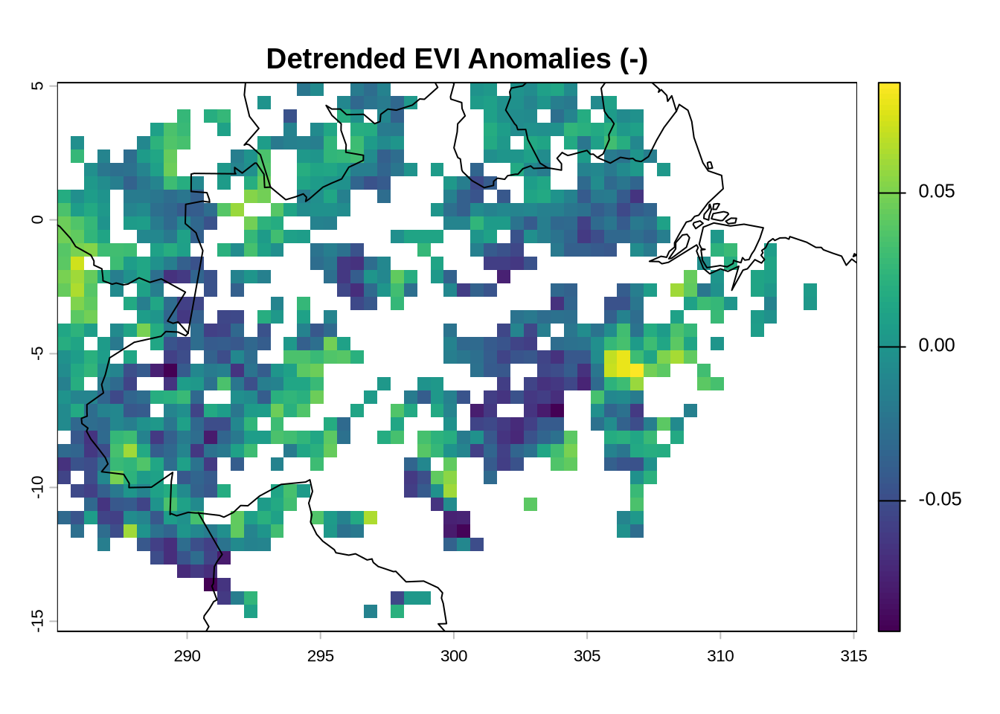
To run the Univariate Early Warning Signal Assessment, execute the script below, which will run for a few minutes. Perfect time for a break!
# Define a function
ews.tau.ar1.fun <- function(x) {
# If a grid cell contains NA, then set the result to NA
if (is.na(mean(x))) {
# return(rep(NA, length(x)))
return(NA)
} else {
time <- 1:length(x)
df <- data.frame(time, x)
rolling_ews_eg <- EWSmethods::uniEWS(
data = df,
metrics = "ar1",
method = "rolling",
winsize = 60
)
result <- rolling_ews_eg$EWS$cor
return(result)
}
}
# Apply Univariate Early Warning Signal Assessment
ews.tau.ar1 <- terra::app(x = data.anom.detrend.coarse, fun = ews.tau.ar1.fun)Plot Kendall’s Tau coefficient for Autocorrelation.
# Set the desired range for the palette
min_val <- -0.9
max_val <- 0.9
# Define breaks to control the min and max of the palette
breaks <- seq(min_val, max_val, 0.1)
my.col <- map.pal("differences", n = length(breaks) - 1)
plot(ews.tau.ar1, col = my.col,
type = "continuous",
breaks = breaks,
main = "Tau AR1, EVI (2001-2023)")
map("world2", add = TRUE)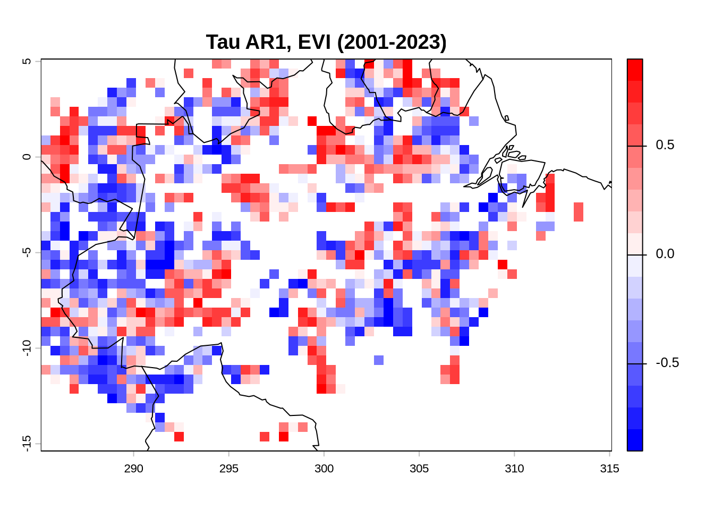
- What is your interpretation of the result?
Repeat the analysis, calculating ecosystem resilience for Australia. For this example, do not mask out low EVI values. The coordinates are 110 to 160 longitude and -45 to -10 latitude, so data <- crop(x=data, y = c(110, 160, -45, -10)). Your result should look similar to the Figures below. Good luck!
Steps:
- Plot EVI mean
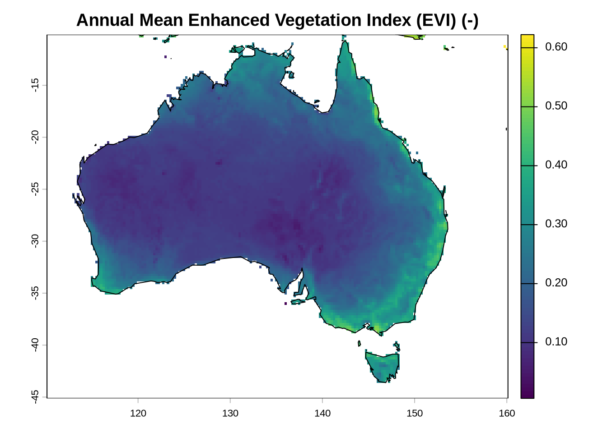
- Calculate 12-month climatological means
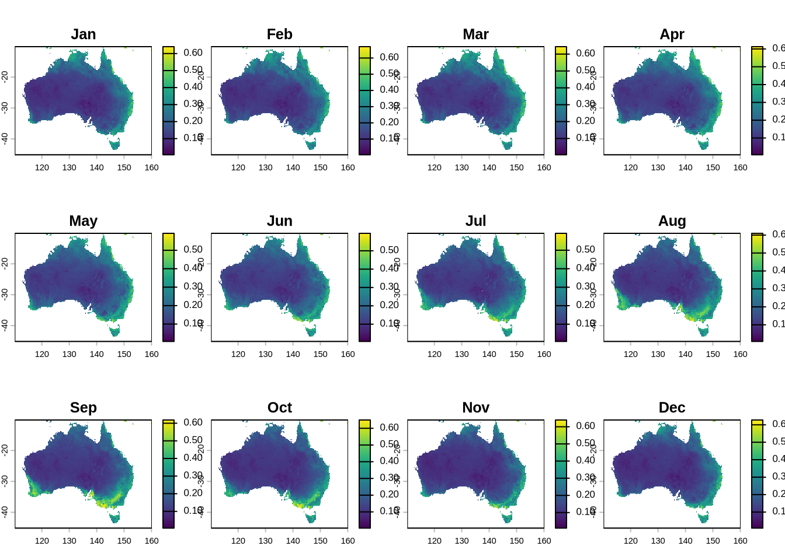
- Calculate the anomalies by subtracting the 12-month climatologies from the monthly data.
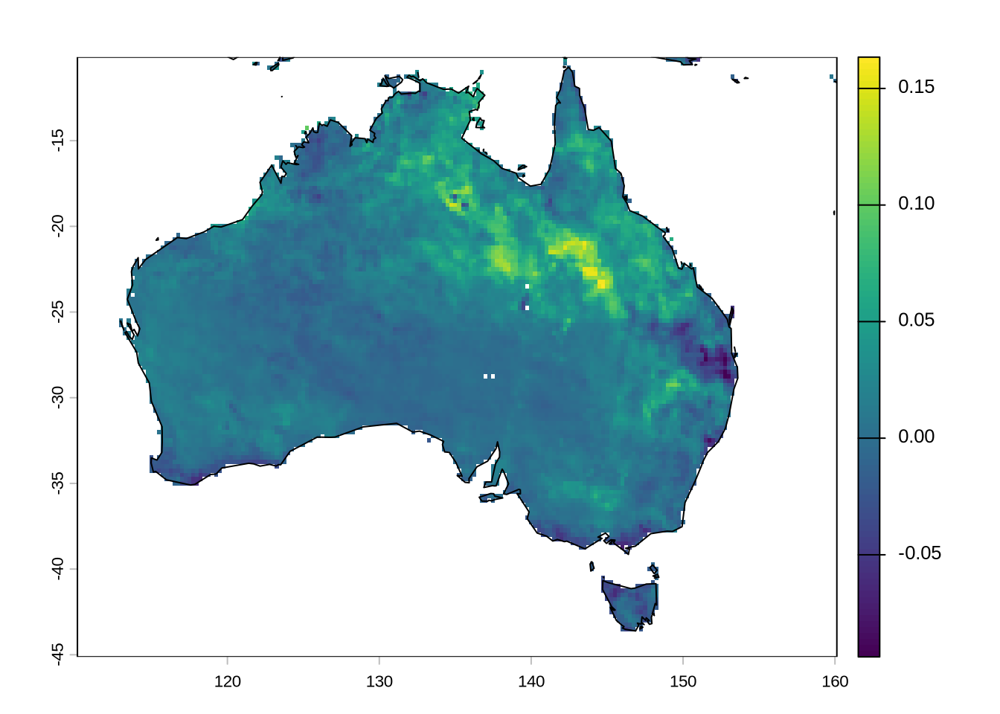
- Plot the trend in EVI anomalies.
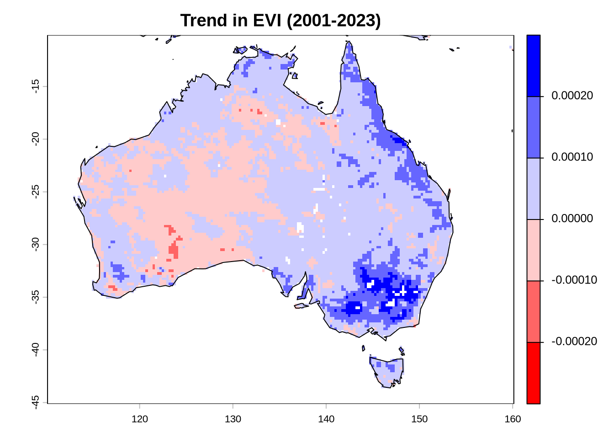
- Detrend the time series.
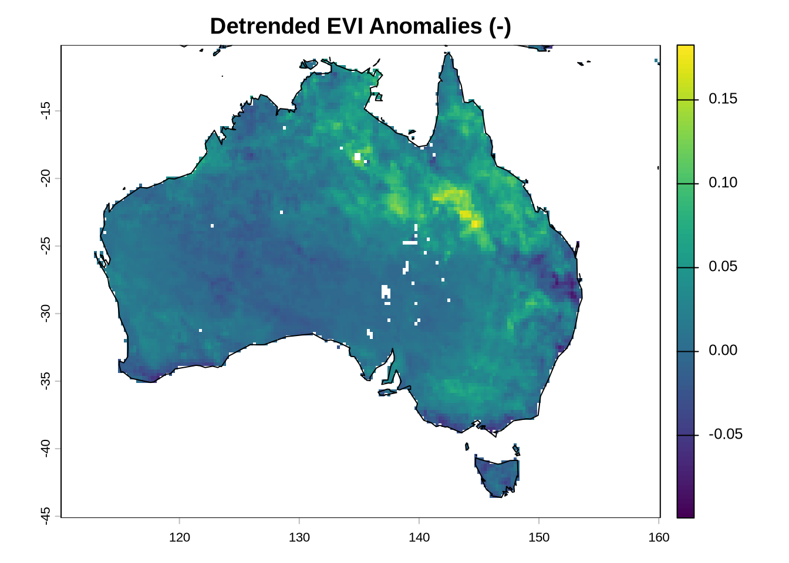
- Reduce the spatial resolution.
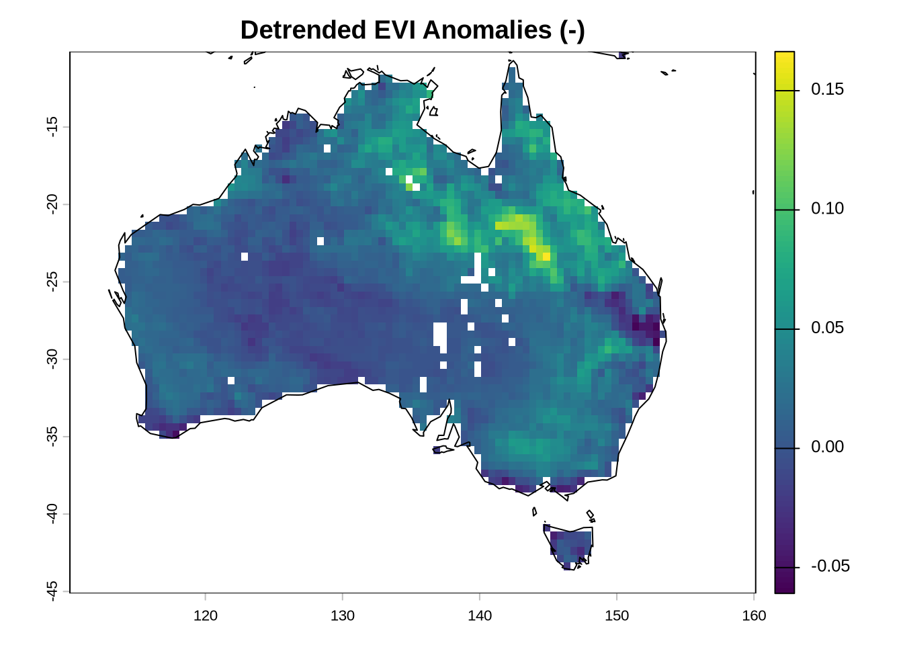
- Run the Univariate Early Warning Signal Assessment
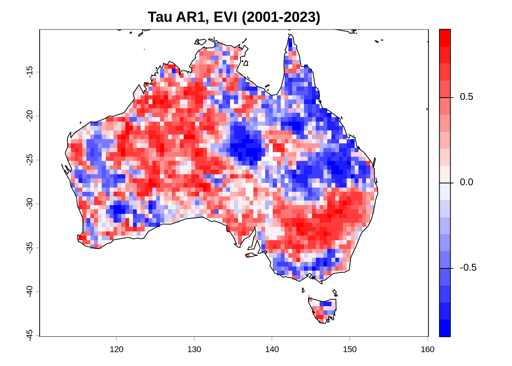
- Interpret your result.